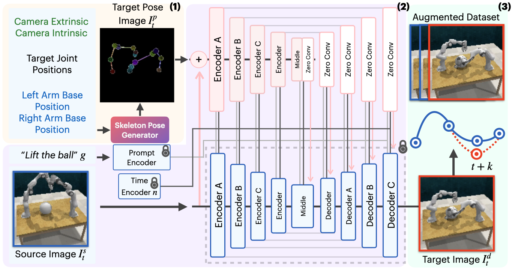
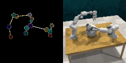

Method Overview
(1) The Skeleton Pose Generator takes camera extrinsics and intrinsics, target joint positions, and left and right robot base positions to generate a skeleton pose image \(I_t^{p}\) representing the desired joint configuration.
(2) The source image \(I_t^s\) and language goal \(g\) are fed into Stable Diffusion, while the generated skeleton pose serves as control input to ControlNet, producing the target image \(I_t^{d}\). The locked icons represent locked parameters.
(3) The original dataset is duplicated and generated target states replace the original states every \(k\) timesteps (at \(t+k\), \(t+2k\), etc.), with updated corresponding action labels. This augmented dataset is combined with the original dataset to train a bimanual manipulation policy.
Random Pose Generation
We demonstrate ROPA's ability to generate diverse robot poses by sampling end-effector positions in different directions. These visualizations showcase ROPA's capability to synthesize realistic robot images for unique joint configurations, enabling effective data augmentation across diverse pose spaces. The left image in each figure shows the target skeleton pose representation, while the right image displays the corresponding generated image.
Arm Moving Up
Random End-Effector Poses Moving Upward

Arm Moving Right
Random End-Effector Poses Moving Rightward
Original vs. Augmented States
We present synthesized images from various bimanual tasks across two timesteps.
Real-World


The dark bordered images show the original RGB and RGB-D images, while the red bordered images represent the generated target image RGB and RGB-D images conditioned on the corresponding skeleton pose shown below.
Rollout Comparisons
These are rollout comparisons between the ROPA (left) and ACT without data augmentation (right). In all rollouts, ACT without augmentation froze, whereas ROPA succeeded.
Lift Ball
Lift Drawer
Push Block
Baseline Comparisons
Compare results between ROPA, ACT with no augmentation, ACT with more data, and Fine-Tuned VISTA across various tasks.
ROPA
ACT without augmentation
ACT with more data
Fine-Tuned VISTA
Variation Expirements
These are real-world expirements with different variations for each task using ROPA.
Lift Ball w/ Distractors
Added various different fruits as distractors
Push Box w/ Distractors
Added various different fruits as distractors
Lift Drawer w/ Distractors
Added various different fruits as distractors
Push Block w/ 2 Blocks
Added one block on top of the original block
BibTeX